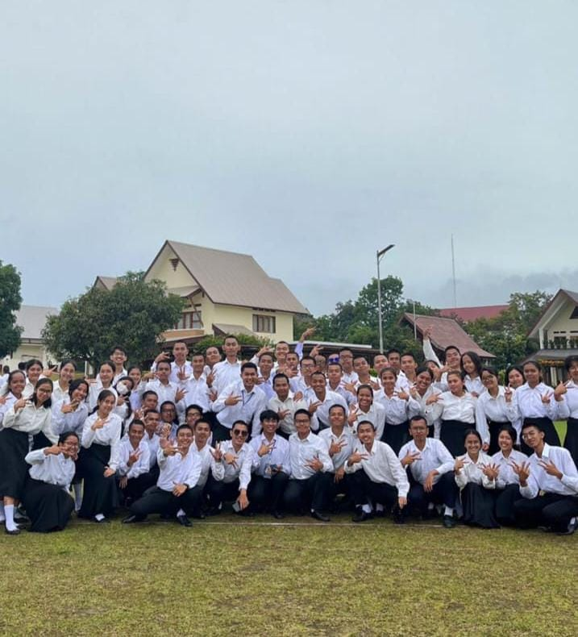

Petualangan di IT DEL
2023 - Present

Perjalanan ini sungguh sangat luar biasa. Kuliah di jurusan dan kampus yang bahkan tidak pernah aku bayangkan sebelumnya, ternyata mampu membawaku sejauh ini. Awalnya penuh dengan keraguan apakah aku bisa mengikuti ritmenya, apakah aku akan menemukan tempatku di sini? Namun, perlahan semua keraguan itu terjawab.
Sekilas memang masih terasa sakit lelah dengan tugas, penat dengan jadwal, bahkan dengan aturan asrama yang selalu ingin membuatku pulang ke rumah. Tetapi, di balik itu semua ada momen-momen indah yang tidak akan pernah terlupakan. Bertemu dengan teman-teman se frekuensi, ketemu dengan seseorang yang sekarang sudah jadi stranger, ketemu dengan dosen/Teaching Assistant yang baik, ketemu dengan Pembina asrama yang baik, bertemu dengan banyak orang yang mempunyai sifat dan karakter yang unik.

|
 |

|

|

|
Belajar bersama di ruang colab, dengar musik sambil ngerjain tugas, pergi ke kantin bersama-sama, atau sekedar tertawa walaupun dilanda banyak tugas, semuanya menjadi kenangan yang sangat berharga. Aku belajar banyak hal di sini, tidak hanya bagaimana caranya memegang komputer, tapi juga bagaimana caranya bertahan di bukan area mu, bagaimana cara beradaptasi dengan lingkungan baru, bagaimana cara menghargai perbedaan, dan yang paling penting adalah bagaimana cara menjadi diri sendiri di tengah-tengah banyak pribadi orang yang saya temui.
Aku mulai menyadari bahwa kebahagiaan tidak selalu datang dari hal-hal besar, tetapi dari momen kecil yang sederhana. Senyum teman yang menyemangati, obrolan ringan di sore hari, atau tawa yang pecah saat sedang stres belajar itulah yang membuat perjalanan ini terasa indah. Mungkin jalannya tidak selalu mulus, tapi bersama teman-teman yang unik dan penuh warna, aku belajar bahwa setiap langkah, sekecil apa pun, layak untuk dirayakan dan didokumentasi.
Label
- Kehidupan Kampus
- Petualangan Mahasiswa
- Pertemanan
- IT Del journey
Deskripsi
Catatan perjalanan mahasiswa IT Del tentang suka duka kuliah, kehidupan asrama, persahabatan, pembelajaran, refleksi diri, hingga momen kecil yang penuh makna dan inspirasi.
Tinggalkan Komentar
Komentar
Tambahin dong ceritanya
Kok fotoku ga ada ya